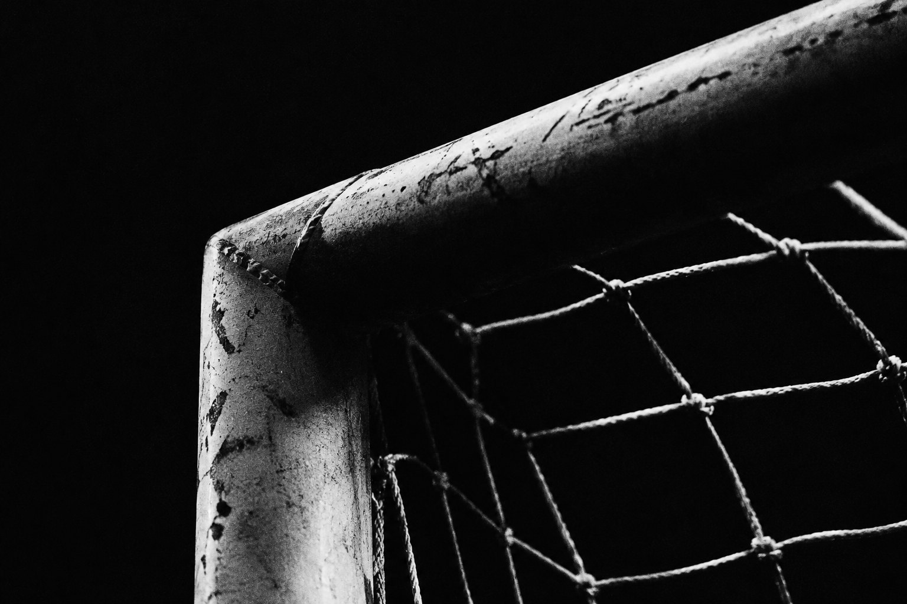
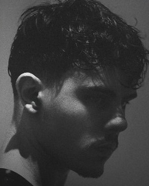

/
©

PortFolio
MZDesign esportivoSports design0104
Projetos recentesRecent projects01
TrabalhosWork
Graphic designer02
SobreAbout
Quem éWho
Texto sobre o Murilo: como começou no design, o estilo dele e o tipo de projeto que faz — pôsteres, social media e sports graphics.
Text about Murilo: how he started in design, his style and the kind of work he does — posters, social media and sports graphics.
- BaseBased in
- São Paulo, BR
- FocoFocus
- Sports graphics
- Status
- Freelance & full-time

Murilo ZennaroContatoContact
Orçamentos, parcerias
e projetosQuotes, partnerships
and projects